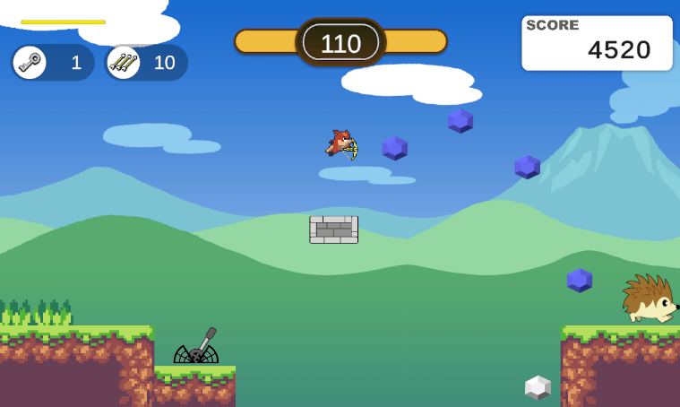
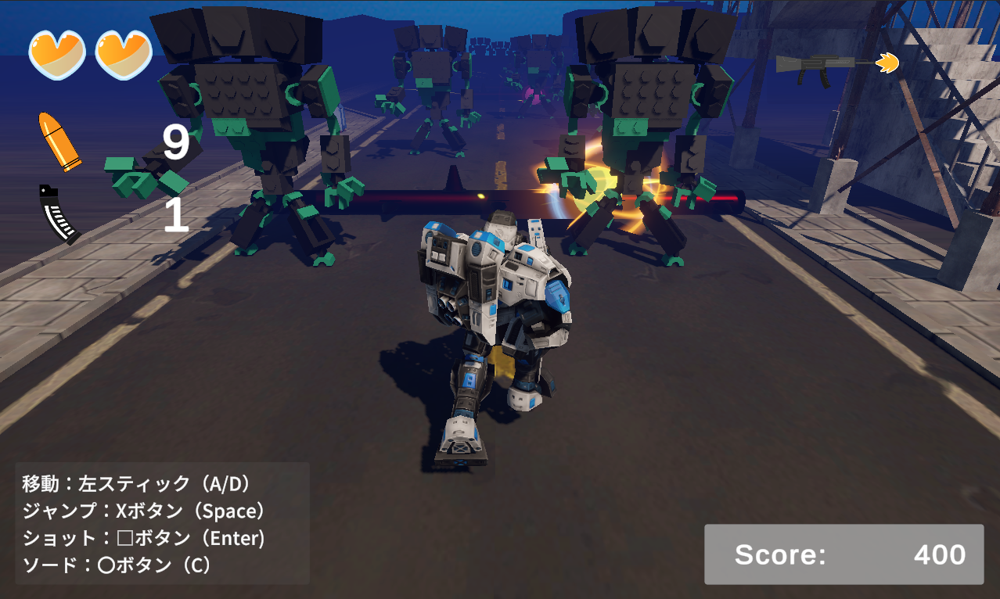
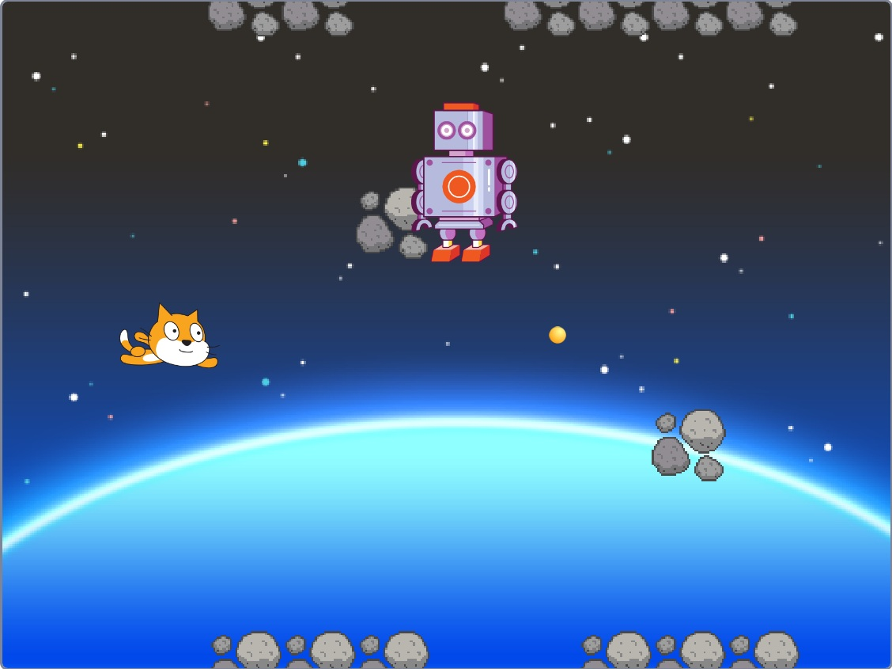

ポートフォリオ
JewelryHunter_World

UnityのUniversal
2Dプロジェクトとして作った横スクロールのアクションゲームです。
ゼルダ風のワールドマップから選んだステージに入り、全ステージをクリアするとボスと戦うことができます。
ステージに入るためのロック解除や、ステージクリアのフラグ管理など細かい技術に加え、続きからゲームができるセーブ機能など細かい技術に加え、続きからゲームができるセーブ機能など様々工夫しています。
RunAndGunSurvivor

自動で前方に疾走するロボットを操作する3Dランアクションゲームです。
射撃と近接攻撃を使い分け、多彩なアイテムで自機を強化しながらゴールの踏破を目指します。
2D横スクロールシューティング

Scratchで作成した横スクロールシューティングアクションです。
強制スクロールで横長のステージを攻略して、最後にボスとの戦闘を楽しむことができます。
変数やリストを駆使してあらかじめ計画したマップを繰り返し構文の入れ子構造で効率的に呼び出して横長のステージを再現しています。